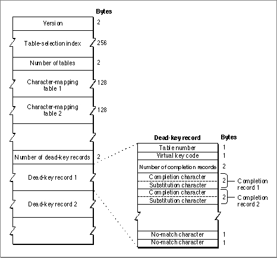

Legacy Document
Important: The information in this document is obsolete and should not be used for new development.
Important: The information in this document is obsolete and should not be used for new development.


Resource Format
Figure C-6 shows the format of the keyboard-layout resource. Its header consists of a version number only. The header is followed by a 256-byte table-selection index that is used to access character-mapping tables. The index is followed by the character-mapping tables, a series of 128-byte tables that map virtual key codes to character codes, depending on what modifier keys are pressed. The final part of the resource is a dead-key table, a series of records that define dead keys and completers. The dead-key records allow the user to enter special character forms, such as accented characters, from the keyboard. How dead keys are processsed is described under "The KeyTranslate Function and the Keyboard-Layout Resource" beginning on page C-19.The dead-key table consists of a 2-byte count of dead-key records, followed by that many records. A dead key record consists of a 1-byte table number (corresponding to a character-mapping table), a 1-byte virtual key code (without up/down bit), a completion table, and a no-match character.
Each completion table in a dead-key record consists of a count of completion records, followed by that number of completion records. A completion record is simply a substitution pair for character codes. If the character code matches the first byte in the completion record, the second byte is substituted for it.
Figure C-6 Format of the keyboard-layout resource
